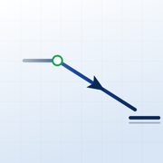

B737 Descent SimPrivacy Policy
B737 Descent Sim · Effective 24 November 2026
B737 Descent Sim does not collect, share or sell any personal information. This page explains what the app keeps on your own device and why.
What the app collects
Nothing. The app has no account or sign-in, no advertising, no analytics and no tracking. It sends nothing about you or your flights anywhere.
What stays on your device
- Settings: your choices on the Settings screen, which on-screen hints you have already seen, and whether you have seen the tutorial.
- Flight statistics: a summary of each completed or failed level (level flown, date and time it ended, result, fuel used and the scoring items), used for the Account Statistics screen.
- Purchases: the list of in-app purchases you own, so the levels unlock at once.
This information is stored only in the app’s storage on your iPhone or iPad. It never leaves the device and the developer cannot see it. Deleting the app deletes it.
In-app purchases
Purchases are made through Apple’s App Store. Apple handles the payment: the app never sees your payment details or your Apple ID. From Apple, the app only receives the list of items you own, to unlock the levels. No third-party purchase service is used. Apple’s handling of purchases is covered by Apple’s Privacy Policy.
Device features
- Screen brightness: the BRT key on the in-app FMC changes the screen brightness, one step each time you press it. Nothing is recorded.
- Sound and haptics: the app plays sounds and vibrations. It does not use the microphone, camera, location, contacts or photos.
Children
The app collects no information from anyone, including children.
Changes
If this policy changes, the new version will be posted on this page with a new effective date.
Contact
Questions about privacy: support@pilotcompass.app